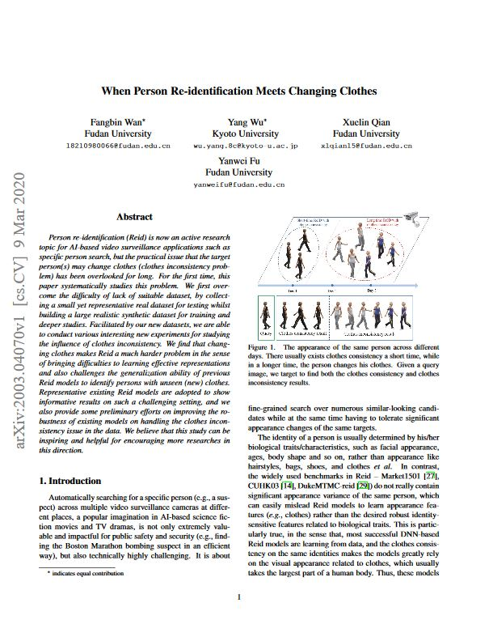

|
Fudan University Kyoto University
|
|
Person re-identification (Reid) is now an active research
topic for AI-based video surveillance applications such as specific person search,
but the practical issue that the target person(s) may change clothes (clothes inconsistency
problem) has been overlooked for long. For the first time, this paper systematically studies
this problem. We first overcome the difficulty of lack of suitable dataset, by collecting a
small yet representative real dataset for testing whilst building a large realistic synthetic
dataset for training and deeper studies. Facilitated by our new datasets, we are able to conduct
various interesting new experiments for studying the influence of clothes inconsistency. We find
that changing clothes makes Reid a much harder problem in the sense of bringing difficulties to
learning effective representations and also challenges the generalization ability of previous
Reid models to identify persons with unseen (new) clothes. Representative existing Reid models
are adopted to show informative results on such a challenging setting, and we also provide some
preliminary efforts on improving the robustness of existing models on handling the clothes
inconsistency issue in the data. We believe that this study can be inspiring and helpful
for encouraging more researches in this direction. The dataset is avaliable on the project website:
https://wanfb.github.io/dataset.html.
|
|
VC-Clothes has 512 identities, 4 scenes (cameras) and on average 9
images/scene for each identity and total number of 19,060 images. We equally split the dataset
by identities, 256 identities in training set and the other 256 in testing set. In test data,
we randomly chose 4 images per person from each camera as query, while the other images serve
as gallery images. Thus, we have altogether 9449 images in training, 1020 images in query and
8591 in the gallery.
|
|
VC-Clothes Dataset
|
|
Real28 is collected in 3 different days (with different clothing) by
4 cameras of 28 different identities and consists of altogether4,324 images with 2 indoor scenes and 2 outdoors.
|
|
Real28 Dataset
|
|
Naming Rule of the images. In bbox "0001_02_03_04.jpg", "0001" is the identity.
"02" means the image from Camera 2. "03" means the number of the clothes that the person is wearing.
"04" is the 4-th image of all the images in Camera 2.
|
|
Dataset Licence.Please follow the LICENSE_Change_Clothes.
You are free to share, create and adapt the VC-Clothes and Real28 dataset, in the manner specified in the license.
|
|  |
Fangbin Wan*, Yang Wu*, Xuelin Qian, Yanwei Fu
When Person Re-identification Meets Changing Clothes. [arXiv] [Bibtex] [GitHub] [Google Drive] [Baidu Drive](password: zoey) |
Acknowledgements
The website is modified from this template.
|